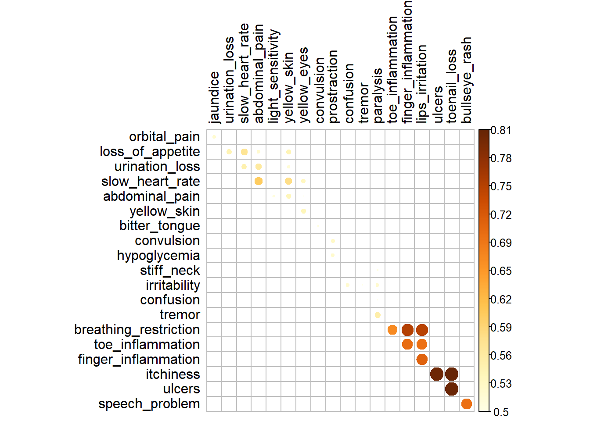
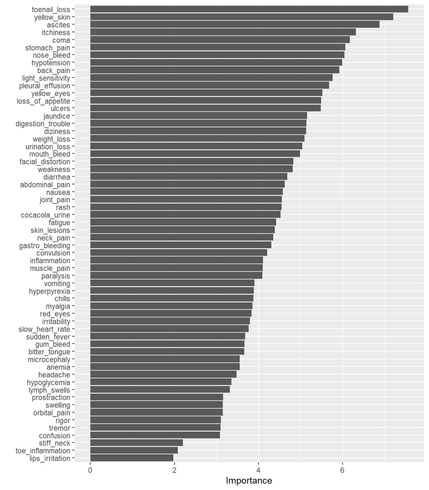
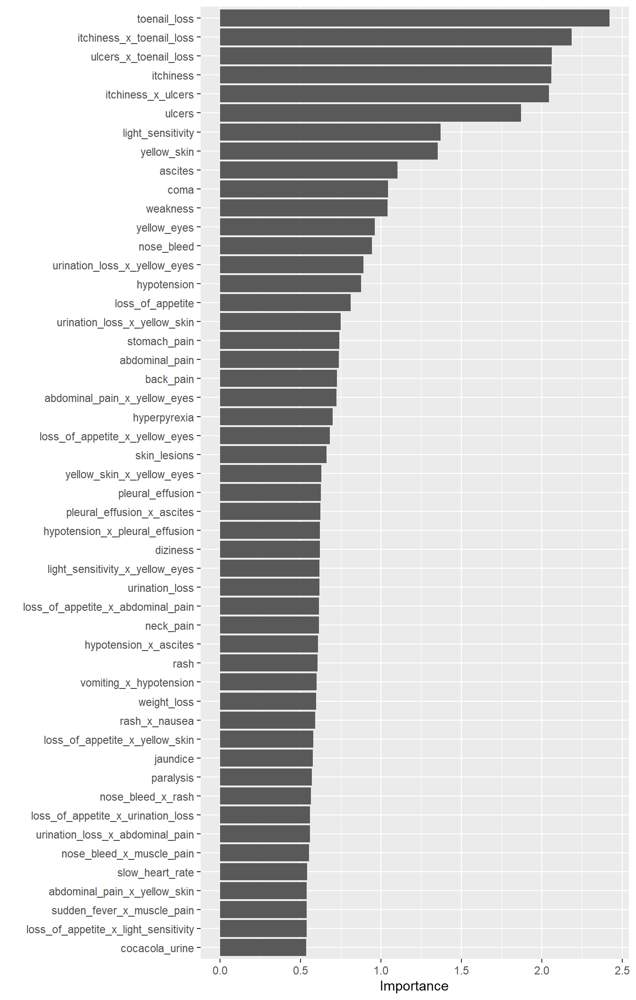

library(data.table)
library(tidyverse)
library(magrittr)
library(here) # avoid having to change between . and .. when running interactively vs knitting
library(DataExplorer)
library(tidymodels)
library(vip)
library(gridExtra)
library(sjmisc) # for rotate_dfEDA
Setup
load(here("Output/01_output.RData"))Use only training data for the EDA and set switch determining whether to do EDA for original or synthetic data.
switch_original <- FALSE
if (switch_original) {
df_train <- output_01$df_train_org
} else {
df_train <- training(output_01$data_split)
}summary(df_train) id sudden_fever headache mouth_bleed
Min. : 0.0 Min. :0.0000 Min. :0.0000 Min. :0.0000
1st Qu.:176.0 1st Qu.:0.0000 1st Qu.:0.0000 1st Qu.:0.0000
Median :359.0 Median :1.0000 Median :0.0000 Median :0.0000
Mean :353.2 Mean :0.5186 Mean :0.4619 Mean :0.4708
3rd Qu.:526.0 3rd Qu.:1.0000 3rd Qu.:1.0000 3rd Qu.:1.0000
Max. :706.0 Max. :1.0000 Max. :1.0000 Max. :1.0000
nose_bleed muscle_pain joint_pain vomiting
Min. :0.0000 Min. :0.0000 Min. :0.0000 Min. :0.0000
1st Qu.:0.0000 1st Qu.:0.0000 1st Qu.:0.0000 1st Qu.:0.0000
Median :0.0000 Median :1.0000 Median :0.0000 Median :0.0000
Mean :0.4867 Mean :0.5274 Mean :0.4549 Mean :0.4319
3rd Qu.:1.0000 3rd Qu.:1.0000 3rd Qu.:1.0000 3rd Qu.:1.0000
Max. :1.0000 Max. :1.0000 Max. :1.0000 Max. :1.0000
rash diarrhea hypotension pleural_effusion
Min. :0.000 Min. :0.0000 Min. :0.0000 Min. :0.0000
1st Qu.:0.000 1st Qu.:0.0000 1st Qu.:0.0000 1st Qu.:0.0000
Median :0.000 Median :0.0000 Median :0.0000 Median :0.0000
Mean :0.492 Mean :0.4035 Mean :0.4142 Mean :0.3841
3rd Qu.:1.000 3rd Qu.:1.0000 3rd Qu.:1.0000 3rd Qu.:1.0000
Max. :1.000 Max. :1.0000 Max. :1.0000 Max. :1.0000
ascites gastro_bleeding swelling nausea
Min. :0.0000 Min. :0.0000 Min. :0.0000 Min. :0.000
1st Qu.:0.0000 1st Qu.:0.0000 1st Qu.:0.0000 1st Qu.:0.000
Median :0.0000 Median :0.0000 Median :0.0000 Median :0.000
Mean :0.3752 Mean :0.3717 Mean :0.3274 Mean :0.377
3rd Qu.:1.0000 3rd Qu.:1.0000 3rd Qu.:1.0000 3rd Qu.:1.000
Max. :1.0000 Max. :1.0000 Max. :1.0000 Max. :1.000
chills myalgia digestion_trouble fatigue
Min. :0.0 Min. :0.0000 Min. :0.0000 Min. :0.0000
1st Qu.:0.0 1st Qu.:0.0000 1st Qu.:0.0000 1st Qu.:0.0000
Median :0.0 Median :0.0000 Median :0.0000 Median :0.0000
Mean :0.4 Mean :0.3646 Mean :0.3699 Mean :0.3292
3rd Qu.:1.0 3rd Qu.:1.0000 3rd Qu.:1.0000 3rd Qu.:1.0000
Max. :1.0 Max. :1.0000 Max. :1.0000 Max. :1.0000
skin_lesions stomach_pain orbital_pain neck_pain
Min. :0.0000 Min. :0.0000 Min. :0.0000 Min. :0.0000
1st Qu.:0.0000 1st Qu.:0.0000 1st Qu.:0.0000 1st Qu.:0.0000
Median :0.0000 Median :0.0000 Median :0.0000 Median :0.0000
Mean :0.3221 Mean :0.3469 Mean :0.3204 Mean :0.3752
3rd Qu.:1.0000 3rd Qu.:1.0000 3rd Qu.:1.0000 3rd Qu.:1.0000
Max. :1.0000 Max. :1.0000 Max. :1.0000 Max. :1.0000
weakness back_pain weight_loss gum_bleed
Min. :0.0000 Min. :0.0000 Min. :0.0000 Min. :0.0000
1st Qu.:0.0000 1st Qu.:0.0000 1st Qu.:0.0000 1st Qu.:0.0000
Median :0.0000 Median :0.0000 Median :0.0000 Median :0.0000
Mean :0.4124 Mean :0.4088 Mean :0.3717 Mean :0.3345
3rd Qu.:1.0000 3rd Qu.:1.0000 3rd Qu.:1.0000 3rd Qu.:1.0000
Max. :1.0000 Max. :1.0000 Max. :1.0000 Max. :1.0000
jaundice coma diziness inflammation
Min. :0.0000 Min. :0.0000 Min. :0.0000 Min. :0.000
1st Qu.:0.0000 1st Qu.:0.0000 1st Qu.:0.0000 1st Qu.:0.000
Median :0.0000 Median :0.0000 Median :0.0000 Median :0.000
Mean :0.3504 Mean :0.4018 Mean :0.3628 Mean :0.315
3rd Qu.:1.0000 3rd Qu.:1.0000 3rd Qu.:1.0000 3rd Qu.:1.000
Max. :1.0000 Max. :1.0000 Max. :1.0000 Max. :1.000
red_eyes loss_of_appetite urination_loss slow_heart_rate
Min. :0.0000 Min. :0.0000 Min. :0.0000 Min. :0.0000
1st Qu.:0.0000 1st Qu.:0.0000 1st Qu.:0.0000 1st Qu.:0.0000
Median :0.0000 Median :0.0000 Median :0.0000 Median :0.0000
Mean :0.3717 Mean :0.4407 Mean :0.4372 Mean :0.4018
3rd Qu.:1.0000 3rd Qu.:1.0000 3rd Qu.:1.0000 3rd Qu.:1.0000
Max. :1.0000 Max. :1.0000 Max. :1.0000 Max. :1.0000
abdominal_pain light_sensitivity yellow_skin yellow_eyes
Min. :0.0000 Min. :0.0000 Min. :0.0000 Min. :0.0000
1st Qu.:0.0000 1st Qu.:0.0000 1st Qu.:0.0000 1st Qu.:0.0000
Median :0.0000 Median :0.0000 Median :0.0000 Median :0.0000
Mean :0.4425 Mean :0.4673 Mean :0.4726 Mean :0.4177
3rd Qu.:1.0000 3rd Qu.:1.0000 3rd Qu.:1.0000 3rd Qu.:1.0000
Max. :1.0000 Max. :1.0000 Max. :1.0000 Max. :1.0000
facial_distortion microcephaly rigor bitter_tongue
Min. :0.0000 Min. :0.000 Min. :0.0000 Min. :0.0000
1st Qu.:0.0000 1st Qu.:0.000 1st Qu.:0.0000 1st Qu.:0.0000
Median :0.0000 Median :0.000 Median :0.0000 Median :0.0000
Mean :0.3628 Mean :0.269 Mean :0.2212 Mean :0.2496
3rd Qu.:1.0000 3rd Qu.:1.000 3rd Qu.:0.0000 3rd Qu.:0.0000
Max. :1.0000 Max. :1.000 Max. :1.0000 Max. :1.0000
convulsion anemia cocacola_urine hypoglycemia
Min. :0.0000 Min. :0.0000 Min. :0.0000 Min. :0.0000
1st Qu.:0.0000 1st Qu.:0.0000 1st Qu.:0.0000 1st Qu.:0.0000
Median :0.0000 Median :0.0000 Median :0.0000 Median :0.0000
Mean :0.2319 Mean :0.2319 Mean :0.2655 Mean :0.2248
3rd Qu.:0.0000 3rd Qu.:0.0000 3rd Qu.:1.0000 3rd Qu.:0.0000
Max. :1.0000 Max. :1.0000 Max. :1.0000 Max. :1.0000
prostraction hyperpyrexia stiff_neck irritability
Min. :0.0000 Min. :0.0000 Min. :0.000 Min. :0.0
1st Qu.:0.0000 1st Qu.:0.0000 1st Qu.:0.000 1st Qu.:0.0
Median :0.0000 Median :0.0000 Median :0.000 Median :0.0
Mean :0.2336 Mean :0.2088 Mean :0.131 Mean :0.2
3rd Qu.:0.0000 3rd Qu.:0.0000 3rd Qu.:0.000 3rd Qu.:0.0
Max. :1.0000 Max. :1.0000 Max. :1.000 Max. :1.0
confusion tremor paralysis lymph_swells
Min. :0.000 Min. :0.0000 Min. :0.000 Min. :0.0000
1st Qu.:0.000 1st Qu.:0.0000 1st Qu.:0.000 1st Qu.:0.0000
Median :0.000 Median :0.0000 Median :0.000 Median :0.0000
Mean :0.177 Mean :0.2053 Mean :0.177 Mean :0.1575
3rd Qu.:0.000 3rd Qu.:0.0000 3rd Qu.:0.000 3rd Qu.:0.0000
Max. :1.000 Max. :1.0000 Max. :1.000 Max. :1.0000
breathing_restriction toe_inflammation finger_inflammation lips_irritation
Min. :0.00000 Min. :0.00000 Min. :0.00000 Min. :0.00000
1st Qu.:0.00000 1st Qu.:0.00000 1st Qu.:0.00000 1st Qu.:0.00000
Median :0.00000 Median :0.00000 Median :0.00000 Median :0.00000
Mean :0.07257 Mean :0.09735 Mean :0.07965 Mean :0.08496
3rd Qu.:0.00000 3rd Qu.:0.00000 3rd Qu.:0.00000 3rd Qu.:0.00000
Max. :1.00000 Max. :1.00000 Max. :1.00000 Max. :1.00000
itchiness ulcers toenail_loss speech_problem
Min. :0.0000 Min. :0.0000 Min. :0.0000 Min. :0.00000
1st Qu.:0.0000 1st Qu.:0.0000 1st Qu.:0.0000 1st Qu.:0.00000
Median :0.0000 Median :0.0000 Median :0.0000 Median :0.00000
Mean :0.1593 Mean :0.1434 Mean :0.1416 Mean :0.03363
3rd Qu.:0.0000 3rd Qu.:0.0000 3rd Qu.:0.0000 3rd Qu.:0.00000
Max. :1.0000 Max. :1.0000 Max. :1.0000 Max. :1.00000
bullseye_rash prognosis original
Min. :0.00000 West_Nile_fever : 68 Min. :0
1st Qu.:0.00000 Japanese_encephalitis: 65 1st Qu.:0
Median :0.00000 Rift_Valley_fever : 56 Median :0
Mean :0.03186 Tungiasis : 55 Mean :0
3rd Qu.:0.00000 Chikungunya : 55 3rd Qu.:0
Max. :1.00000 Yellow_Fever : 51 Max. :0
(Other) :215 df_train %>%
count(prognosis) prognosis n
1: Lyme_disease 42
2: Tungiasis 55
3: Zika 46
4: Rift_Valley_fever 56
5: West_Nile_fever 68
6: Malaria 36
7: Chikungunya 55
8: Plague 41
9: Dengue 50
10: Yellow_Fever 51
11: Japanese_encephalitis 65A very straight forward data set. Fortunately, no missing values. The classes are fairly balanced as well.
Marginal Distributions
Only indicator predictors (and a lot of them), so we will refrain form plotting.
Distributions by target
No plotting for the same reason as above. Instead, we will do a count by prognosis:
df_train %>%
select(
!c(id, original)
) %>%
group_by(
prognosis
) %>%
summarise(
across(where(is.integer), sum)
) %>% rotate_df(cn = TRUE) Lyme_disease Tungiasis Zika Rift_Valley_fever
sudden_fever 33 16 26 24
headache 23 20 13 22
mouth_bleed 27 13 15 31
nose_bleed 29 11 17 22
muscle_pain 27 20 26 22
joint_pain 27 18 17 25
vomiting 22 17 19 25
rash 25 16 25 23
diarrhea 29 13 14 22
hypotension 31 13 19 26
pleural_effusion 24 11 18 21
ascites 24 12 16 24
gastro_bleeding 22 9 16 21
swelling 26 10 15 15
nausea 28 10 10 17
chills 32 11 17 15
myalgia 32 10 14 18
digestion_trouble 30 12 20 20
fatigue 26 8 17 13
skin_lesions 29 10 17 18
stomach_pain 30 10 19 22
orbital_pain 30 10 15 13
neck_pain 31 8 19 21
weakness 34 7 26 24
back_pain 33 11 20 20
weight_loss 33 4 23 17
gum_bleed 28 10 19 17
jaundice 35 10 19 16
coma 28 16 28 23
diziness 28 6 26 18
inflammation 32 5 17 9
red_eyes 28 9 24 14
loss_of_appetite 28 13 33 16
urination_loss 29 15 29 14
slow_heart_rate 23 13 30 12
abdominal_pain 29 10 30 12
light_sensitivity 31 10 34 18
yellow_skin 31 13 28 14
yellow_eyes 25 10 30 13
facial_distortion 29 16 21 11
microcephaly 22 6 19 5
rigor 19 5 11 8
bitter_tongue 28 9 3 11
convulsion 26 6 4 12
anemia 22 7 6 11
cocacola_urine 24 12 5 10
hypoglycemia 21 8 13 10
prostraction 25 4 10 9
hyperpyrexia 20 14 6 18
stiff_neck 16 2 3 4
irritability 18 8 3 17
confusion 23 9 4 8
tremor 22 9 3 14
paralysis 20 4 3 14
lymph_swells 21 6 1 7
breathing_restriction 14 5 2 1
toe_inflammation 15 3 4 7
finger_inflammation 15 5 3 0
lips_irritation 15 3 3 1
itchiness 7 33 1 17
ulcers 1 33 0 17
toenail_loss 5 36 0 12
speech_problem 7 2 2 2
bullseye_rash 7 1 1 3
West_Nile_fever Malaria Chikungunya Plague Dengue
sudden_fever 37 24 32 21 23
headache 33 21 31 20 21
mouth_bleed 38 23 30 16 28
nose_bleed 41 21 38 19 31
muscle_pain 43 19 32 27 24
joint_pain 20 27 30 18 31
vomiting 24 21 30 16 23
rash 24 25 37 21 28
diarrhea 28 26 19 18 22
hypotension 36 19 6 21 22
pleural_effusion 36 26 6 18 17
ascites 30 23 1 22 14
gastro_bleeding 29 18 8 24 12
swelling 27 18 6 22 8
nausea 19 20 29 17 21
chills 38 21 15 15 17
myalgia 30 18 5 20 13
digestion_trouble 21 19 5 24 13
fatigue 24 14 6 18 15
skin_lesions 25 19 2 15 8
stomach_pain 33 21 0 20 8
orbital_pain 24 17 3 19 11
neck_pain 36 22 3 18 16
weakness 36 18 3 22 9
back_pain 38 22 4 23 12
weight_loss 31 18 5 16 16
gum_bleed 26 21 4 14 8
jaundice 34 20 1 21 9
coma 26 22 3 21 9
diziness 29 24 2 19 11
inflammation 24 15 4 20 8
red_eyes 29 19 5 19 9
loss_of_appetite 30 21 4 30 8
urination_loss 32 21 3 28 11
slow_heart_rate 31 22 4 27 7
abdominal_pain 30 26 4 30 10
light_sensitivity 38 23 3 31 9
yellow_skin 37 23 4 33 5
yellow_eyes 31 20 5 27 3
facial_distortion 29 25 2 22 8
microcephaly 22 21 2 16 1
rigor 14 21 2 10 9
bitter_tongue 19 21 1 14 7
convulsion 19 20 1 15 4
anemia 17 21 1 11 8
cocacola_urine 23 22 2 13 15
hypoglycemia 16 19 1 15 8
prostraction 18 19 1 14 4
hyperpyrexia 14 5 1 8 10
stiff_neck 17 5 0 5 3
irritability 21 3 0 11 3
confusion 20 5 0 8 4
tremor 20 4 1 10 8
paralysis 20 6 0 5 3
lymph_swells 14 5 0 4 11
breathing_restriction 7 4 0 3 1
toe_inflammation 10 4 0 4 3
finger_inflammation 8 4 0 3 2
lips_irritation 6 4 0 4 5
itchiness 8 0 0 1 14
ulcers 8 0 0 1 13
toenail_loss 8 0 0 1 11
speech_problem 2 0 0 2 2
bullseye_rash 2 0 0 1 3
Yellow_Fever Japanese_encephalitis
sudden_fever 24 33
headache 28 29
mouth_bleed 19 26
nose_bleed 20 26
muscle_pain 30 28
joint_pain 20 24
vomiting 25 22
rash 26 28
diarrhea 16 21
hypotension 18 23
pleural_effusion 15 25
ascites 16 30
gastro_bleeding 22 29
swelling 16 22
nausea 19 23
chills 19 26
myalgia 16 30
digestion_trouble 25 20
fatigue 13 32
skin_lesions 15 24
stomach_pain 13 20
orbital_pain 15 24
neck_pain 20 18
weakness 26 28
back_pain 23 25
weight_loss 21 26
gum_bleed 20 22
jaundice 12 21
coma 20 31
diziness 21 21
inflammation 21 23
red_eyes 24 30
loss_of_appetite 38 28
urination_loss 38 27
slow_heart_rate 34 24
abdominal_pain 37 32
light_sensitivity 33 34
yellow_skin 37 42
yellow_eyes 37 35
facial_distortion 20 22
microcephaly 21 17
rigor 8 18
bitter_tongue 7 21
convulsion 8 16
anemia 8 19
cocacola_urine 8 16
hypoglycemia 9 7
prostraction 11 17
hyperpyrexia 6 16
stiff_neck 7 12
irritability 8 21
confusion 6 13
tremor 7 18
paralysis 8 17
lymph_swells 6 14
breathing_restriction 1 3
toe_inflammation 1 4
finger_inflammation 1 4
lips_irritation 1 6
itchiness 1 8
ulcers 1 7
toenail_loss 1 6
speech_problem 0 0
bullseye_rash 0 0Correlation
There are a lot of variables in the dataset, so we visualize only the most important ones:
df_train %>%
select(!c(id, original)) %>%
corr_simple()
Urea and osmo are fairly correlated and have similar marginal relationships with the target
Variable importance
Only main effects
rerun_main <- FALSE # In this case, the models runs extremely fast because the dataset is so small, however, this is best practice
if (rerun_main) {
rf_fit_main <-
rand_forest() %>%
set_mode("classification") %>%
set_engine(
"ranger",
importance = "impurity"
) %>%
fit(
formula = prognosis ~ .,
data = df_train %>% select(!c(id, original))
)
rf_var_imp_main <-
rf_fit_main %>%
vi()
save( # caching does not really work for som reason
rf_var_imp_main,
file = here("Output/02_featImp_main.RData")
)
}load(here("Output/02_featImp_main.RData"))
rf_var_imp_main %>%
vip(num_features = 60)
With interaction features
# -- Include "brute force" interaction terms
rerun_int <- FALSE
if (rerun_int) {
rf_rec_int <-
recipe(
formula = prognosis ~ .,
data = df_train %>% select(!c(id, original))
) %>%
step_interact(
terms = ~ all_predictors():all_predictors()
)
rf_spec_int <-
rand_forest() %>%
set_mode("classification") %>%
set_engine(
"ranger",
importance = "impurity"
)
rf_wflow_int <-
workflow() %>%
add_recipe(rf_rec_int) %>%
add_model(rf_spec_int)
rf_fit_int <-
rf_wflow_int %>%
fit(df_train %>% select(!id))
rf_var_imp <-
rf_fit_int %>%
extract_fit_parsnip() %>%
vi()
save(
rf_var_imp,
file = here("Output/02_featImp_int.RData")
)
}load(here("Output/02_featImp_int.RData"))
rf_var_imp %>%
vip(num_features = 50)